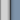
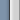

Xin Calendar 2 Mods: Tiles
The Tiles mod provides us an option to enhance the look of the calendars with some background tiles.
The background consists of nine (9) tiles as below:
We will need to know the size of the corner tiles and we assume that the corner tiles have the same size. The width of the vertical center tiles and the height of the horizontal center tiles will be calculated basing on padding of the calendar outer panel and the inner size of the calendar.
The Tiles mod only works with In-Page version:
xcMods=[...
{"order": 1, "mod": "Tiles", "script": "mod_tiles.js"},
...
or:
<script language="javascript" src="../config/xc2_default.js"></script> <script language="javascript"> xcMods[7].order=1; </script>
For the CSS settings, we could have something like:
.panel {
border-width:0px;
padding:16px;
position:relative;
z-index:2;
background-color:transparent;
}
.tileTL { background:url("../images/1.gif") no-repeat; }
.tileTC { background:url("../images/2.gif") repeat-x; }
.tileTR { background:url("../images/3.gif") no-repeat; }
.tileCL { background:url("../images/4.gif") repeat-y; }
.tileCC { background:url("../images/5.gif") repeat; }
.tileCR { background:url("../images/6.gif") repeat-y; }
.tileBL { background:url("../images/7.gif") no-repeat; }
.tileBC { background:url("../images/8.gif") repeat-x; }
.tileBR { background:url("../images/9.gif") no-repeat; }
Note: The panel CSS has to be set to "position:relative;" and "z-index:2;" so that the calendar can stay on top of the background tiles, and it also has to be set to "background-color:transparent;" so that the background tiles at a lower z-index could be visible. The padding can be any number depending on the visual effect.
In this example, we have the following images as tiles:
|  |  | |
And for the tile settings, we have:
addTiles(conf_name, corner-width, corner-height, "cssTL", "cssTC", "cssTR", "cssCL", "cssCC", "cssCR", "cssBL", "cssBC", "cssBR")
addTiles("conf", 20, 20, "tileTL", "tileTC", "tileTR", "tileCL", "tileCC", "tileCR", "tileBL", "tileBC", "tileBR");
[Date Tips] [Back to index page]
# # #